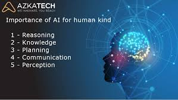

Applications Of Artificial Intelligence
Links:
Applications of Artificial Intelligence (AI)

AI is important because it can help solve immensely difficult issues in various industries, such as entertainment, education, health, commerce, transport, and utilities. AI applications can be grouped into five categories:
Reasoning:
The ability to solve problems through logical deduction. financial asset management, legal assessment, financial application processing, autonomous weapons systems, games.

Knowledge:
The ability to present knowledge about the world. financial market trading, purchase prediction, fraud prevention, drug creation, medical diagnosis, media recommendation.
Planning:
The ability to set and achieve goals. inventory management, demand forecasting, predictive maintenance, physical and digital network optimization, navigation, scheduling, logistics.
Communication:
The ability to understand spoken and written language. real-time translation of spoken and written languages, real-time transcription, intelligent assistants, voice control.
Perception:
The ability to infer things about the world via sounds, images, and other sensory inputs. medical diagnosis, autonomous vehicles, surveillance.